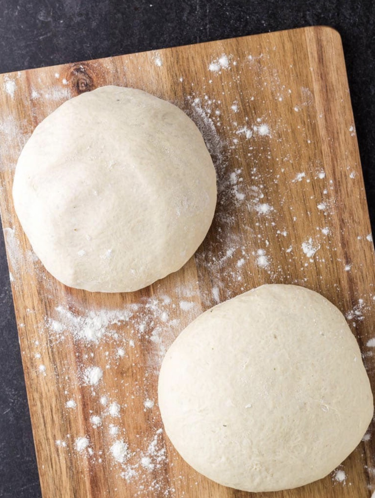
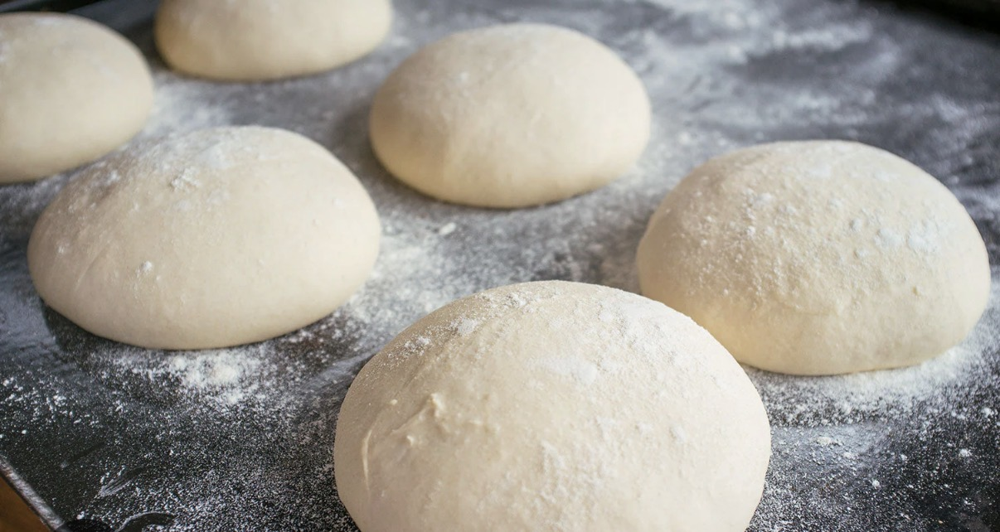
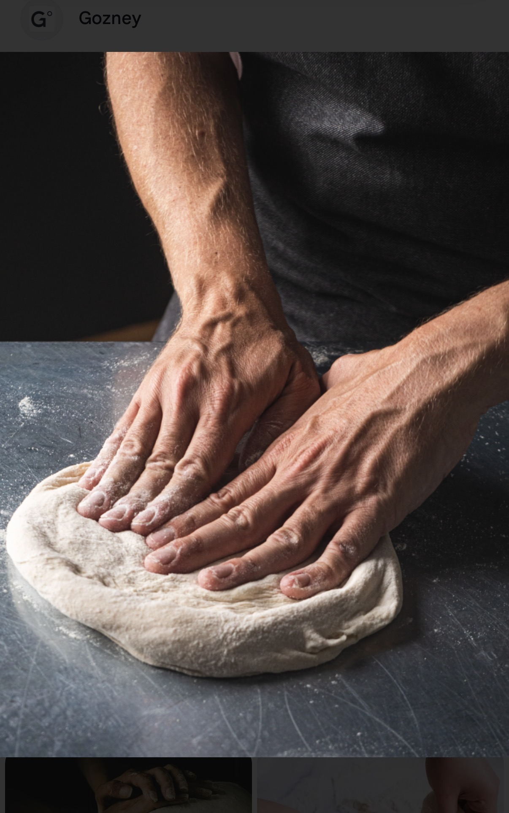
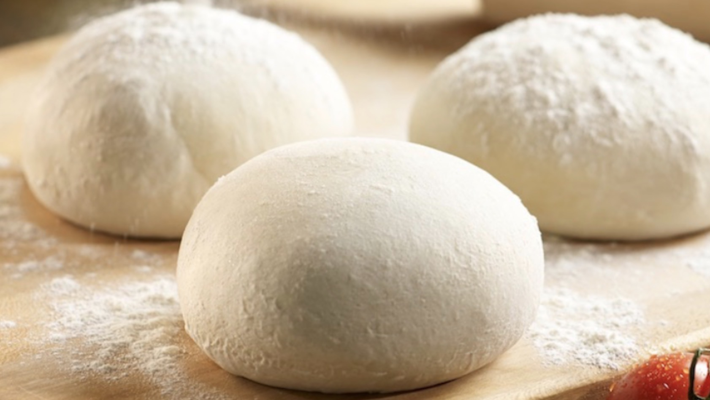
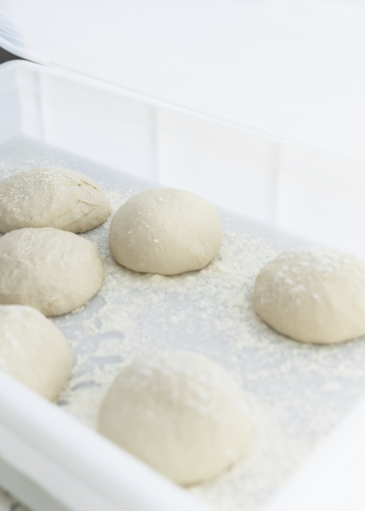

Cleaner Handling
Individually wrapped dough balls support better organization, easier portion tracking, and a more controlled prep environment.


Forno Medici delivers gourmet flash-frozen pizza dough balls created for restaurants, hospitality, institutional dining, and distribution programs that value quality, clean execution, and a more elevated finished pizza experience.
Individually wrapped. Easy to handle. Designed for organized kitchen workflow.



Forno Medici Foods manufactures gourmet flash-frozen Italian artisan pizza dough balls in a format designed to support professional kitchens with cleaner handling, easier prep flow, and dependable finished results.
From thaw planning to portion handling and final bake application, the Forno Medici format is structured to fit professional kitchen environments that need control, organization, and visual product quality.
Forno Medici is built for teams that want a dough solution that feels more structured, easier to manage, and better suited to modern foodservice operations.
Individually wrapped dough balls support better organization, easier portion tracking, and a more controlled prep environment.
Reduce the number of in-house dough tasks required during production planning and service prep.
Bring Italian-style dough character to pizza programs that want a more polished finished presentation.
Suitable for operators balancing quality expectations with the practical demands of day-to-day kitchen execution.
Forno Medici was created to bring the character of Italian-style dough to professional kitchens in a format that works within the realities of commercial foodservice.
The result is a product built not only around finished pizza quality, but also around preparation flow, back-of-house practicality, and broader menu application across different service models.

Forno Medici supports distributors, restaurant groups, hospitality programs, and institutional buyers looking for a dough line that can fit a range of operator needs while maintaining a strong visual and commercial presentation.
Structured for broad channel relevance, flexible account fit, and premium menu positioning.

Review the product line, explore channel applications, and access handling information designed for operators, buyers, and distribution partners.
Connect with our team for product details, sample requests, sales support, and commercial discussions.